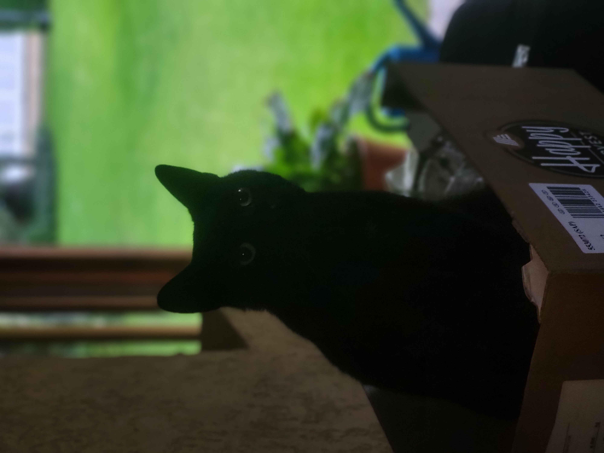

A weboldal létrehozásának egy nagy története van. Amikor éppen utaztam a buszon nem volt internet sem letöltött játék. Nem volt nálam semmi. Mivel Erdély, haláli sötét vol és nem is én ültem az ablaknál. Még rengeteg óra volt hátra. Aztán arra gondoltam hogy mivel Android-os vagyok ezért bármi lehetséges. Arra gondoltam, létrehozok egy weboldalt ahol a videókat, bejegyzéseket hírdetem meg. ennek lényege hogy legyen egy reklám mentes oldal. Tehetném Facebookra is. De ez csak a jelenleg, ami kikerülhet Facebookra. Később itt lesz a vásárlás meg egyéb dolog. Ehhez pedig szükség van rád, rátok. Nélkületek nem lehetne létrehozni.
2026.06.07. 9:42

Az ajtó előtt macskát találtam.
2026.06.05. xx:xx
A te videóid
Ez egy teljesen külön oldal! Ide jönnek majd a videós anyagaid.
Shorts videók
Ez is egy különálló rész, ide írhatsz a rövid videóidról.
Bejegyzések és képek
A weboldal létrehozásának egy nagy története van. Amikor éppen utaztam a buszon nem volt internet sem letöltött játék. Nem volt nálam semmi. Mivel Erdély, haláli sötét vol és nem is én ültem az ablaknál. Még rengeteg óra volt hátra. Aztán arra gondoltam hogy mivel Android-os vagyok ezért bármi lehetséges. Arra gondoltam, létrehozok egy weboldalt ahol a videókat, bejegyzéseket hírdetem meg. ennek lényege hogy legyen egy reklám mentes oldal. Tehetném Facebookra is. De ez csak a jelenleg, ami kikerülhet Facebookra. Később itt lesz a vásárlás meg egyéb dolog. Ehhez pedig szükség van rád, rátok. Nélkületek nem lehetne létrehozni.